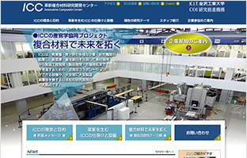
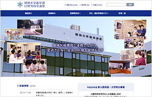

大学・学術系サイトやりますAcademy
- HOME
- 大学・学術系サイトやります
大学や学会などの学術系サイトは、コンテンツに研究や教育といった専門性の高い内容を含むことや、ターゲットが学生や研究者など特定の層に向いていることなどに特徴があります。
私たちは、東京大学や学会を中心に数多くのサイトを手掛けてきました。分かりやすい学術系サイトを作るにはコンテンツを理解していることが必須です。クライアントからもらった原稿を並べるという作業に特化してしまうと、正確性に問題が生じたり、場合によっては写真と文章の組み合わせを間違えたり、頓珍漢なイラストを作ってしまったり、といった不具合を起こすこともあります。私たちは、サイトとの作り手である私たち自身がコンテンツを消化できていてこそ、読み手にも分かりやすい「伝わるサイト」を作れると考えています。
「伝わるサイト」を作るために
専門的なコンテンツを一般人とつなぐ
専門家同士で話をするかぎり、内容を理解するための前提条件や専門用語を相手が理解しているかどうかを心配することはあまりありませんが、それを専門家の枠に入らない人に伝える場合には、ターゲットとなるその人に理解できる条件を揃えてあげる必要があります。専門用語はそれを知らない人に分かる言葉に置き換えたり補足したり、前提条件があるのであればその説明を追加する、などです。そういった補足説明が必要になりますから、それだけ情報量も増えます。それらを、ターゲットとなる人が理解するための順番に並べることなど、情報全体を構造化して表現することも大切です。
ちなみにターゲットとなる人ですが、すぐに
「専門家でない人 ＝ 一般人」
となるわけではありません。例えば、科学の専門家である理学部の研究内容を小中学校の理科の先生に伝えるとしたら、ターゲットは理科の先生という一般の人よりもずっと科学に関しての基礎知識を持つ人として扱うことが適切でしょう。
ちなみに、このように不特定多数の一般人よりもハードルを上げることが、コンテンツをよりターゲットに届きやすくする（ターゲット以外からの問い合わせを減らす）効果を生むこともあります。
研究内容も取材しライティング
取材してコンテンツを作るには、その内容に適したライターが必要です。取材した内容を文章にするには、それを聞いて理解し形にできるまでのベースが必要だからです。内容が観光であったり、飲食などの生活関連であったりすれば、ベースを問われませんが、化学の専門的な内容を取材する人が化学式にアレルギーを持っていては、ライティングは難しいでしょう。エンジニアリングの世界であれば、技術の進歩発展が歴史的背景、特に戦争との強い関連を持っていたりします。そういった理解のベースが、取材してコンテンツを文章化するために必要です。
組織の雰囲気やらしさをデザイン化
建学の精神や設立の趣意書などを踏まえ、大学であれば実際のキャンパスを訪問してみて、学術機関であれば機関誌に目を通してみるなどで、独自の個性、雰囲気、らしさを感じ取り、クライアントと協議をしながらビジュアルデザインとして形にしていきます。
歴史ある大学や学会であれば、その長い時間の中にも個性を強化したり決定づけたりした出来事があります。そういう過去を踏まえることで、より的確に見た人に訴える力を持つ分かりやすいデザインを作ることができます。
既存のバラバラなコンテンツを統一
学部や学科、専攻が独立してサイトを運営している場合があります。また、新規に統合したサイトを作ろうという場合でも、各部局が既存の資料を原稿として提出してくることもあります。こういった場合、それらを寄せ集めただけでは、まとまりのある分かりやすいサイトになりません。
私たちは、そういったバラバラのコンテンツ素材に対して、積極的にリライトを行っています（もちろん、クライアントの許可を取ります）。文末や用語の統一だけでなく、サイト内での標準的なフォーマットを意識して論理構成を単純化したり、パラグラフを細かく分けて見出しを立てたり、ページを分割したりして、分かりやすく改変します。
忙しい先生に代って情報発信
研究や開発の中心にいて発信したい情報を一手に持っている先生（教授）方。しかし、中心にいるからこそ大変に忙しくもあり、それが情報発信、サイトへの情報掲載にとって障害になることがあります。
私たちは、そのお忙しい先生に代って情報発信の作業を行います。最低限、載せるべき情報やその候補を挙げて頂ければ、見出しや文末などのフォーマットを整えたり、CMSを使って（あるいはコーディングして）ページにしたり、といった情報発信作業を行います。また、スピードを重視する場合や細部までご自身で詰めたい先生方向けには、難しいコードなどを知らなくても扱えるようにCMSをチューニングして提供いたします。
大学・学術系サイト制作事例
東京大学大学院新領域創成科学研究科人間環境学専攻様
プロジェクト

人間を取り巻く環境を、特に、低炭素社会の実現と高齢化への対応に重心を置いて研究を行っている東京大学大学院の専攻サイトです。主に入学希望者(現役大学生)への情報提供を念頭に置き、レスポンシブ対応で構築してスマホにも対応したサイトにしました。過去の入試問題も入手できます。
金沢工業大学革新複合材料研究開発センター様
プロジェクト

CFRP（炭素繊維強化プラスチック）を中心とした新しい複合材料を実社会で活かすため、2014年に設置された新しい研究開発センターのサイトです。材料そのものの研究だけでなく、既存の大学や研究の枠にとらわれずに社会実装を強く意識した活動を行っていますので、サイトも既存枠にとらわれないことを意識しました。
昭和大学歯学部様
プロジェクト

顎の変形や損傷、がんといった歯科診療の分野でも特に専門性の高い内容を扱うため、クライアント様と制作担当としての当社の役割を分離して対応しました。